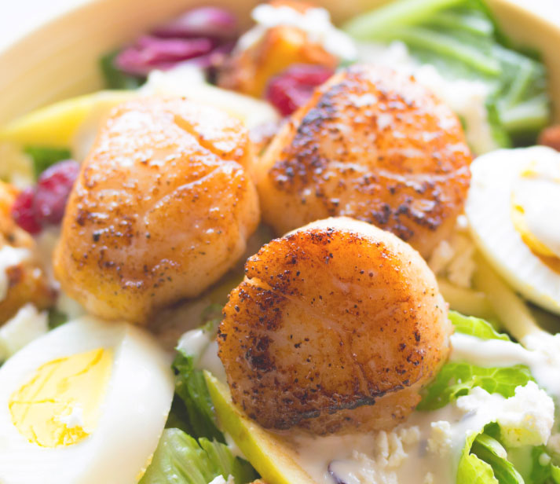
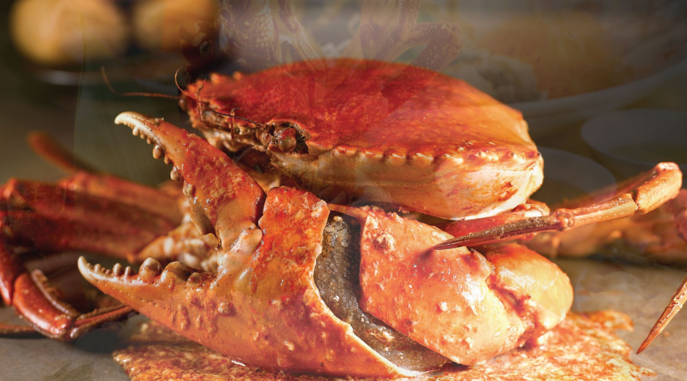
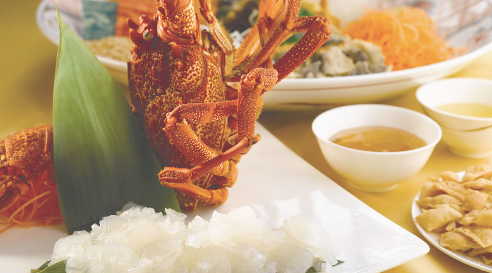
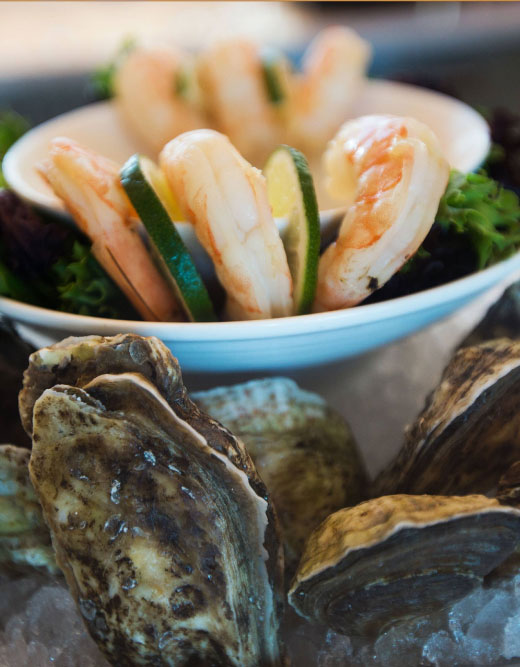
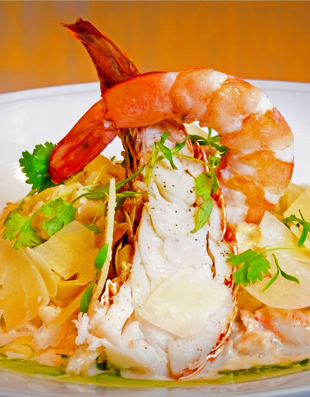

Fresh seafood selection from our tanks...

Signature Dish
Singapore Chilli Mud Grab
Our signature Singapore Chilli Live Mud Crab is a blend of savoury and slightly spicy sauce, bringing satisfaction to your taste buds.

Signature Dish
Lobster Sashimi
Served live from our tanks, freshly prepared with an impeccable presentation and taste of the ocean.

Reservation
Barluck seafood restaurant is open from
11pm to 3pm and 5pm to 11pm,
Monday to Sunday.
Level 1, 109 John St
Cabramatta NSW 2166
02 9726 5703
info@barluck.com.au
